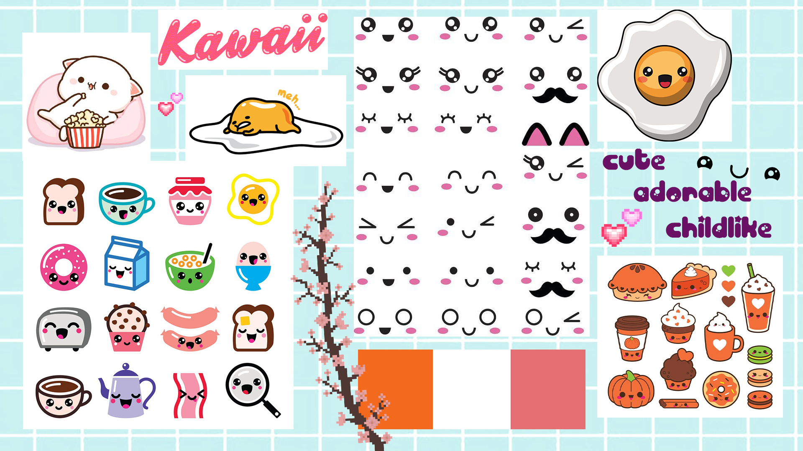

04.01.01: Animation on a background
Our task was to create an animation on a background. The process included designing the animation, designing the background, drawing it in Illustrator, making an animated sprite and finally putting everything together in CSS. During the process I learned basic animation principles, as well as improved my skills in Illustrator. To start we had to again make a moodboard about an animation style which we will draw inspiration from. I chose the Japanese kawaii style.
SEE THE ANIMATION
04.02.01: Javascript controlled animation
This assignment was my first introduction to a proper javascript. I had to make a webpage where user can turn on and off ten different CSS animations for the previously created character. I also learned how to make SVG animations and added one on top of the page.
SEE THE WEBPAGE
04.03.01 Project pool
I also worked in pairs on some smaller javascript based assignments. First one is the „Stop watch” project. We made “start”, “stop” and “resume” button; made a display with minutes and second and also added hours. We tried to implement the clocking sound to the watch.
SEE THE STOP WATCH
Second one is the picture carousel where user can browse through 6 different pictures. We added descriptions to all of them.
SEE THE PICTURE CAROUSEL
04.04.01: Onboarding
The biggest assignment in this theme was to create an interactive, animated, web based onboarding sequence. The target group for it were non-danes who are not living in Denmark and who are in the process of deciding whether they should apply to the multimedia design course in Copenhagen. Our aim was to make sure that they will choose the right programme for themselves as it is hard to know what to expect from it before actually experiencing it. In our work we used gamification and added game like elements like badges. In this group project my main role was working in Illustrator and designing the characters.